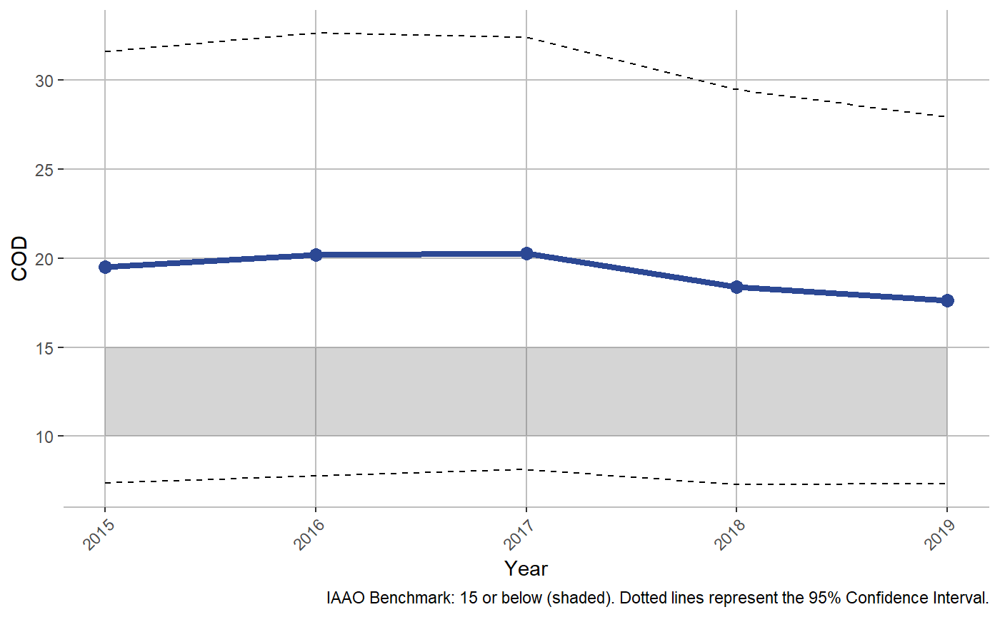
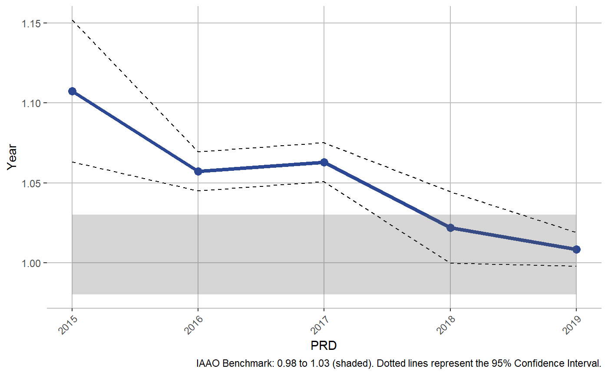
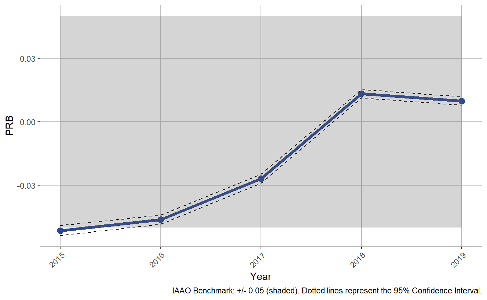
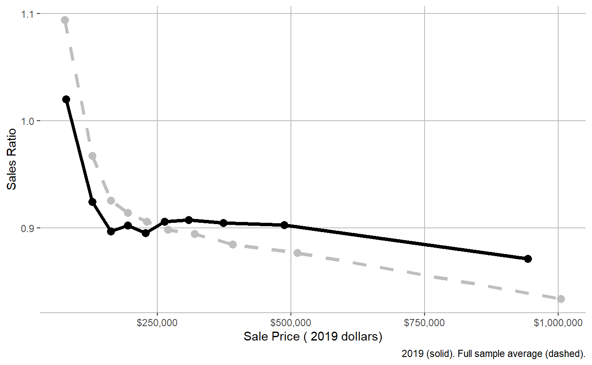
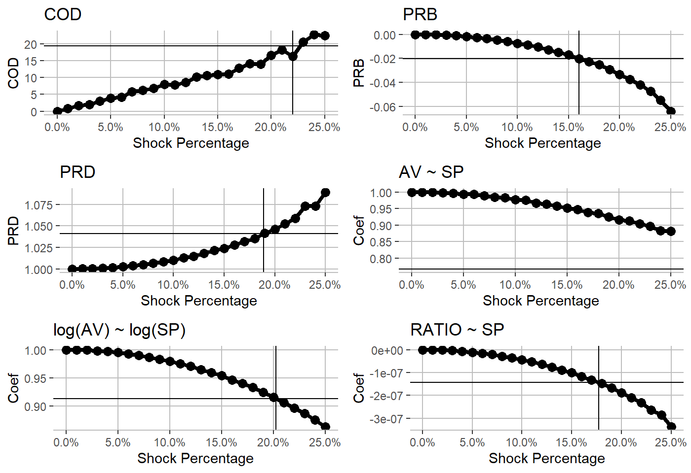

library(cmfproperty)
Ratios
In this documentation, data which has been appropriately processed is referred to as ratios
reformat_data also add the additional calculated fields needed to complete the study:
- RATIO, which is the Sales Ratio (Sale Price / Assessed Value)
- arms_length_transaction, an indicator that the property was sold in an arm’s length transaction (calculated using the IAAO standard)
- SALE_PRICE_ADJ, inflation adjusted sale price (adjusted to the last year of available data)
- ASSESSED_VALUE_ADJ, inflation adjusted assessed value (adjusted to the last year of available data)
Note: ratios refers to data which has been processed by reformat_data
Other features
Calculate Regressivity Statistics
This is the basic framework to conduct a sales ratio study:
df <- cmfproperty::example_data ratios <- cmfproperty::reformat_data( df, sale_col = "SALE_PRICE", assessment_col = "ASSESSED_VALUE", sale_year_col = "SALE_YEAR", ) #> [1] "Filtered out non-arm's length transactions" #> [1] "Inflation adjusted to 2019" stats <- cmfproperty::calc_iaao_stats(ratios) head(stats) #> N COD COD_SE PRD PRD_SE PRB PRB_SE q1_ratio median_ratio #> 1 51879 19.4871 6.1860 1.1076 0.0227 -0.0514 0.0012 0.7758364 0.9093448 #> 2 62852 20.2023 6.3517 1.0572 0.0063 -0.0462 0.0011 0.7705720 0.9001375 #> 3 65961 20.2642 6.1985 1.0629 0.0063 -0.0269 0.0011 0.7428108 0.8732099 #> 4 65298 18.3863 5.6636 1.0220 0.0114 0.0133 0.0010 0.7470336 0.8856039 #> 5 62041 17.6147 5.2462 1.0083 0.0054 0.0098 0.0010 0.7681042 0.9035000 #> q3_ratio q1_sale median_sale q3_sale q1_assessed_value median_assessed_value #> 1 1.057180 148000 230000 375000 136670.0 213430 #> 2 1.060422 148000 229900 365000 133940.0 209150 #> 3 1.031267 155000 235000 365000 136960.0 209380 #> 4 1.021504 159642 239900 370000 132382.5 210645 #> 5 1.036399 164900 245000 372000 140220.0 217690 #> q3_assessed_value Year #> 1 331235.0 2015 #> 2 321720.0 2016 #> 3 316300.0 2017 #> 4 331257.5 2018 #> 5 336480.0 2019
Visualize Regressivity Statistics
iaao_rslt <- iaao_graphs(stats, ratios, min_reporting_yr = 2015, max_reporting_yr = 2019, "Cook County, Illinois")
iaao_rslt[[2]]

iaao_rslt[[4]]

iaao_rslt[[6]]

Advanced Regressivity Statistics
cmfproperty::regression_tests(ratios) #> Model Value Test T Statistic Conclusion #> 1 paglin72 3.470212e+04 > 0 135.385620 Regressive #> 2 cheng74 9.136623e-01 < 1 1348.353690 Regressive #> 3 IAAO78 -1.430746e-07 < 0 -97.596795 Regressive #> 4 kochin82 9.359248e-01 < 1 1348.353690 Regressive #> 5 bell84 2.031487e+04 > 0 77.266036 Regressive #> 6 -1.811579e-08 < 0 -157.626702 Regressive #> 7 sunderman90 1.111135e+04 > 0 5.063213 Regressive #> Model Description #> 1 AV ~ SP #> 2 ln(AV) ~ ln(SP) #> 3 RATIO ~ SP #> 4 ln(SP) ~ ln(AV) #> 5 AV ~ SP + SP^2 #> 6 AV ~ SP + SP^2 #> 7 AV ~ SP + low + high + low * SP + high * SP
Regressivity Plots
plot_ls <- cmfproperty::plots(ratios, min_reporting_yr = 2015, max_reporting_yr = 2019, jurisdiction_name = "Cook County, Illinois") #> Joining, by = "TAX_YEAR"
In 2019, the most expensive homes (the top decile) were assessed at 87.1% of their value and the least expensive homes (the bottom decile) were assessed at 102.0%. In other words, the least expensive homes were assessed at 1.17 times the rate applied to the most expensive homes. Across our sample from 2015 to 2019, the most expensive homes were assessed at 83.4% of their value and the least expensive homes were assessed at 109.4%, which is 1.31 times the rate applied to the most expensive homes.
plot_ls[[2]]

In Cook County, Illinois, 68% of the lowest value homes are overassessed and 39% of the highest value homes are overassessed.
plot_ls[[4]]

Monte Carlo Analysis
m_rslts <- monte_carlo_graphs(ratios) gridExtra::grid.arrange(m_rslts[[1]], m_rslts[[2]], m_rslts[[3]], m_rslts[[4]], m_rslts[[5]], m_rslts[[6]], nrow = 3) #> Warning: Removed 1 rows containing missing values (geom_vline).

Report Evaluation Output
df <- cmfproperty::example_data ratios <- cmfproperty::reformat_data( df, sale_col = "SALE_PRICE", assessment_col = "ASSESSED_VALUE", sale_year_col = "SALE_YEAR", ) cmfproperty::make_report(ratios, jurisdiction_name = "Cook County, Illinois", output_dir = "C:/Users/erhla/Desktop/")